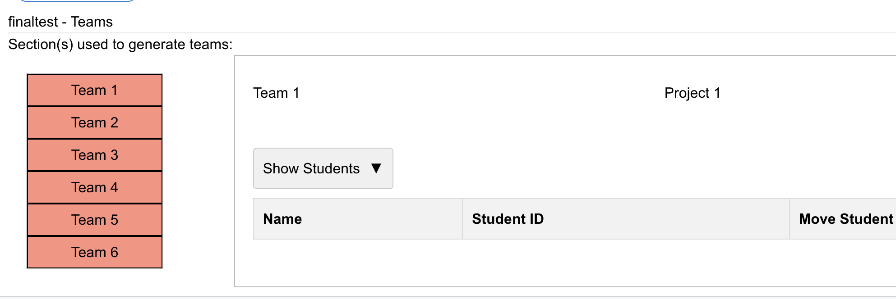

COSC449 - Directed Studies Project Demonstration
Supervised by Dr. Bowen HuiProject Highlights, Tech Stack, and Feedback by Tina Liu
Tech Stack
- React.js
- BootStrap
- HTML/CSS
Teamable Analytics simplifies the process of creating effective student teams for UBC instructors by transforming student data into clear, actionable insights. With little existing research in this space, this tool fills a critical gap—making team formation smarter, faster, and more intuitive. For my Directed Studies, I worked on improving UI UX elements to make the process more efficient and smoother for instructors.
Tasks
On Teamable Analytics, Dr. Bowen Hui identified key UI/UX challenges affecting instructor experience—too much on-screen text, a complicated decision-making process, and limited accessibility to different team configurations. I focused on simplifying the interface by decluttering data, reducing scrolling, and streamlining how instructors view and compare team options.


Three UI/UX Features
Sorting Teams
Effortlessly organize teams with drag-and-drop and progress-based categorization. Users can quickly locate and rearrange teams, label their review status, and focus on analysis instead of searching.
Dropdown Menus
Minimize visual clutter with dropdowns for key selections. Dropdowns streamline the interface, reduce cognitive load, and make the UI intuitive for all users.
Replacing Text with Less Text
Cleaner visual hierarchy by reducing and repositioning text. Recommendations are now subtle and mobile-friendly, making the interface easier to scan and less overwhelming.
-
Sorting Teams
Before: "Sort Teams"
After: "Sort Teams"
The first UI/UX feature I introduced in the project was a draggable and droppable interface that allows users to efficiently access and organize all teams. Instead of scrolling through a long list to find a specific team, users can now quickly locate and rearrange teams with ease. To further streamline the review process, I added a progress-based categorization system using a dropdown menu located at the top right of the screen. Users can label each team as "Not Ready", "In Progress", or "Ready", depending on their review status. This intuitive and minimalistic layout not only reduces navigation time but also helps users stay focused on analyzing teams rather than searching for them.
Strengths
- Reduces scrolling time
- Allows users to sort teams based on their preferences
- Minimizes text on the screen
- Allows users to focus on analyzing teams rather than searching for them
Weaknesses
- Users may not understand the purpose of the dropdown menu
- Users may not know how to use the progress-based categorization system
- Users may not know how to use the drag and drop feature
- A few bugs when dragging and dropping teams
- When users refresh the screen, it removes their prigress
Feedback
- Didn't like the color for red, green, yellow
- User didn't like how you couldn't save your progress
- All users seemed to enjoy the feature
- Could have changed the color when you hover over the team you are about to click
-
Dropdown Menus
Before: "Select a team"
After: "Select a team"
The dropdown menu was designed to minimize visual clutter and maintain a clean, focused interface, allowing users to concentrate on selecting key attributes for data visualizations. By consolidating multiple options into a single compact element, the dropdown helps reduce cognitive load and streamlines the decision-making process. This approach is particularly effective when screen real estate is limited or when users need to make quick, context-specific selections. Dropdowns are also familiar UI patterns, making them intuitive and efficient for both novice and experienced users.
Strengths:
- Minimizes visual clutter
- Reduces cognitive load
- Streamlines the decision-making process
- Allows users to focus on selecting key attributes for data visualizations
Weaknesses
- Users may not know how to use the dropdown menu
- Some users may prefer a more traditional interface with all options visible
Feedback
- All users prefered the dropdown menu over the old design
- Users thought it was easy to use
- Users liked how it minimized visual clutter
- Users thought it was a good way to reduce cognitive load
-
Replacing Text with Less Text
Before: "Recommended for you"
After: "Recommended"
To improve usability and visual clarity, I chose to place the “recommended” label beneath each radio button option rather than beside it. This design decision helps establish a cleaner visual hierarchy, making it easier for users to scan and associate recommendations with specific visualization types. By positioning the recommendation as a subtle secondary cue, the interface avoids overwhelming the user while still providing helpful guidance. Additionally, this layout is more responsive and mobile-friendly, as it prevents horizontal clutter and ensures that the interface scales gracefully across different screen sizes. Overall, this approach enhances the user experience by balancing clarity, guidance, and visual simplicity.
Strengths
- Improves usability and visual clarity
- Establishes a cleaner visual hierarchy
- Makes it easier for users to scan and associate recommendations with specific visualization types
- More responsive and mobile-friendly
Weaknesses
- Some users may prefer the traditional layout with the label beside the radio button
- Users may not understand the purpose of the recommendation
Feedback
- most users preferred the simplified version.
- One user asked why it was considered "recommended"
- Users liked how it minimized visual clutter
- Users thought it was a good way to reduce cognitive load